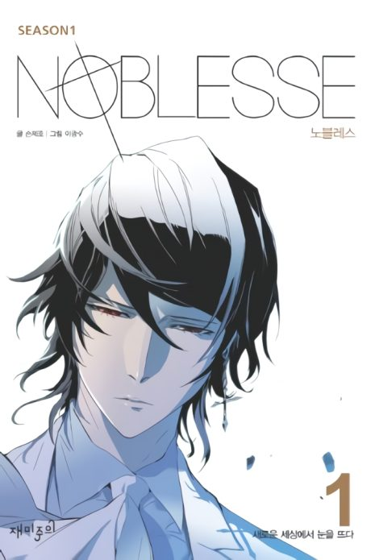
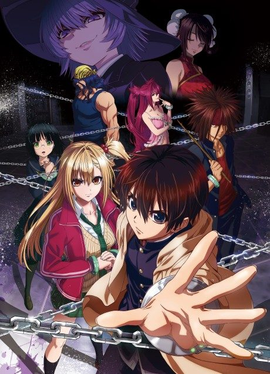

Noblesse: Awakening
NOBLESSE:Awakening
Raizel, a powerful noble, wakes up after 820 years of sleep and enrolls in a high school.
After the anime, read the manga from Chapter 200.
7.0AniList score
—Animeter, no votes yet
14episodes, 2 seasons
Rate it or report where you stopped
2 seasons, 14 episodes
In airing order. Episode numbers on this site count straight through every season, so season 2 starts at episode 2.
1
2016 · Web
Noblesse: Awakening
Episodes1–11 ep
2
2020 · TV
Noblesse
Episodes2–1413 ep
Sources: AniList
More like Noblesse: Awakening
 Manga Ch. 1818.4
Manga Ch. 1818.4
 Manga SBR 247.7
Manga SBR 247.7
 Original7.3
Original7.3
 Manga Ch. 346.3
Manga Ch. 346.3
 Manga Ch. 1118.0
Manga Ch. 1118.0
 Manga Vol. New Testament 17.0
Manga Vol. New Testament 17.0
 Manga Ch. 1357.3
Manga Ch. 1357.3
 Manga Vol. 107.1
Manga Vol. 107.1
 Manga Ch. 6617.9
Manga Ch. 6617.9

Unclear6.6 Film7.9
Film7.9
 Manga Ch. 577.6
Manga Ch. 577.6